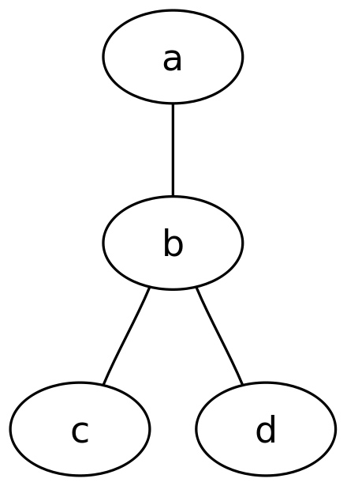
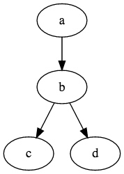
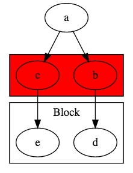
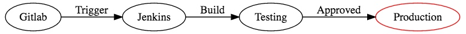

Graphviz 入门指南
Graphviz 是一个开源的图可视化工具，非常适合绘制结构化的图标和网络。Graphviz 使用一种叫 DOT 的语言来表示图形。
DOT 语言
DOT 语言是一种图形描述语言。能够以简单的方式描述图形，并且为人和计算机所理解。
无向图
graph graphname {
a -- b -- c;
b -- d;
}

有向图
digraph graphname {
a -> b -> c;
b -> d;
}

设置属性
属性可以设置在节点和边上，用一对 [] 表示，多个属性可以用空格或者 , 隔开。
strict graph {
// 设置节点属性
b [shape=box];
c [shape=triangle];
// 设置边属性
a -- b [color=blue];
a -- c [style=dotted];
}
完整的属性列表可以参考 attrs | Graphviz - Graph Visualization Software
子图
subgraph 的作用主要有 3 个：
- 表示图的结构，对节点和边进行分组
- 提供一个单独的上下位文设置属性
- 针对特定引擎使用特殊的布局。比如下面的例子，如果
subgraph的名字以cluster开头，所有属于这个子图的节点会用一个矩形和其他节点分开。
digraph graphname{
a -> {b c};
c -> e;
b -> d;
subgraph cluster_bc {
bgcolor=red;
b;
c;
}
subgraph cluster_de {
label="Block"
d;
e;
}
}

布局
默认情况下图是从上到下布局的，通过设置 rankdir="LR" 可以让图从左到右布局。
一个简单的表示 CI&CD 过程的图：
digraph pipleline {
rankdir=LR;
g [label="Gitlab"];
j [label="Jenkins"];
t [label="Testing"];
p [label="Production" color=red];
g -> j [label="Trigger"];
j -> t [label="Build"];
t -> p [label="Approved"];
}

工具
有非常多的工具可以支持 DOT 语言，这些工具都被集成在 Graphviz 的软件包中，可以简单安装使用。
dot
一个用来将生成的图形转换成多种输出格式的命令行工具。其输出格式包括PostScript，PDF，SVG，PNG，含注解的文本等等。
neato
用于sprint model的生成（在Mac OS版本中称为energy minimized）。
twopi
用于放射状图形的生成
circo
用于圆形图形的生成。
fdp
另一个用于生成无向图的工具。
dotty
一个用于可视化与修改图形的图形用户界面程序。
lefty
一个可编程的(使用一种被EZ影响的语言[4])控件，它可以显示DOT图形，并允许用户用鼠标在图上执行操作。Lefty可以作为MVC模型的使用图形的GUI程序中的视图部分。
另外介绍 2 个在线生成 Graphviz 的网站：
Reference
[1] 使用 Graphviz 生成自动化系统图
[2] DOT语言 - 维基百科，自由的百科全书
[3] http://www.graphviz.org/content/dot-language